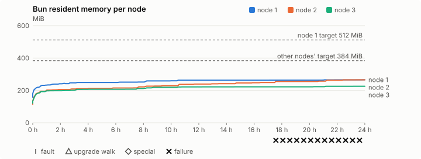
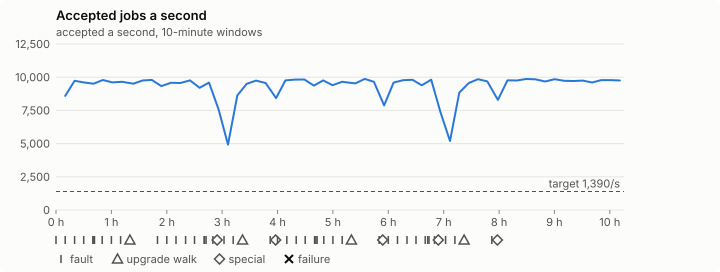
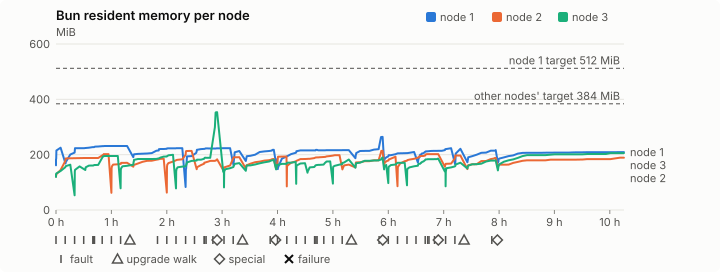
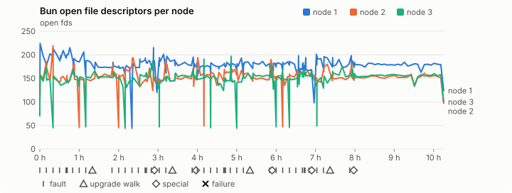
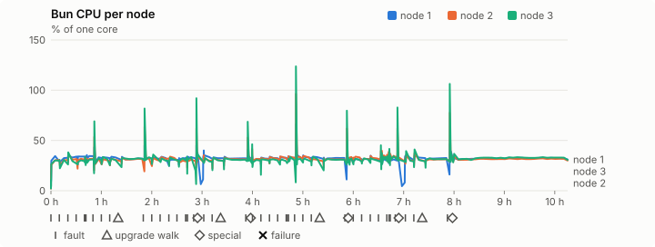
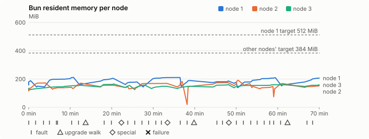
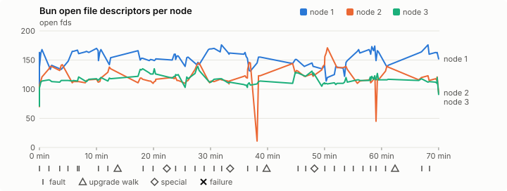
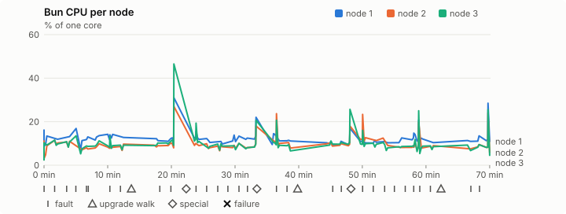

User documentation
Build requirements, runtimes, configuration, secure cluster setup and CLI commands.
Built for humans and their agents.
Kubernetes hands you the ingredients. Reliaburger hands you the burger: app scheduling, batch jobs, metrics, logs, service discovery, ingress, mTLS, a Docker registry, GitOps and chaos testing, in one Rust agent and one CLI. And that CLI speaks to your AI agent too.
We used to trust infrastructure because lots of people ran it. More users meant more eyes, and more eyes meant fewer bugs. Then Heartbleed sat in OpenSSL for over two years, and xz was saved by one engineer curious about slow ssh logins.
Finding bugs is cheap now, and the CVE count shows it. January to October 2026 brought 92,319 CVEs, against 41,213 in the same months of 2025, by RuntimeWire’s count of NVD. The Linux kernel published 8,311 by 7 November, against 5,683 in all of 2025 (Linux CVE Tracker). Not all of that is AI, but the AI-found part is growing fast: one OpenAI run built working root exploits for 948 distinct kernel bugs for about $1.2 million (OpenAI, SecurityWeek). Popular code gets searched hardest, by everyone. What matters now is how fast a fix reaches every node, whether anyone can check the code, and how much of it there is.
| The answer | What exists | What doesn’t yet |
|---|---|---|
| One thing to upgrade | Not Kubernetes, etcd, a CNI, an
ingress controller, cert-manager, Prometheus, Grafana, a log stack, Argo CD and a
registry, each on its own release cycle, but one binary. relish upgrade start rolls it
across the cluster, signed, with automatic rollback, and we shipped sixteen
releases in 45 days. |
The OS patches separately until 0.3.0’s netbooted appliance image, which is planned, not shipped. A person starts every upgrade, and before 1.0 a format change needs a fresh cluster. |
| Continuously scrutinised | Apache 2.0, and every
release relish carries its own source. Claude Code found and patched a
bug we planted in it in
5 of 5 runs. Fuzzing,
mutation tests and a dependency audit run on a schedule. |
A scheduled LLM review of the whole code base is a design goal for 1.0. Today LLM reviews happen in audits someone starts. |
| Ten times less code | 202,730 lines of Rust, against 2,134,280 lines of Go for the Kubernetes projects that cover the same features, counted with the same tool and rules. | Lines aren’t bugs, and the Kubernetes side does more. Without Cilium and Grafana it’s 6.7 times. |
| One advisory stream | Our issues, plus RustSec for our crates. Kubernetes’s own feed alone has 95 CVEs, and etcd, containerd, runc, Helm and Argo CD each keep their own. | The crates bring their own advisories: 13 against one on 26 October 2026. |
The design goal, with every source · Self-upgrades · The release log
curl -fsSL https://reliaburger.com/install.sh | sh -s -- --laptopOne line installs relish, then builds a three-node cluster of Linux
VMs on your laptop, running real containers. Every download is checked against a
pinned digest or the release’s signing key. From 0.2.7, you can
check any release file yourself, too:
gh attestation verify FILE --repo reliaburger/reliaburger, with the flags in
the release guide.
Got Linux machines already? Swap
--laptop for --install-only to install just
relish, then follow the
Linux servers guide.
You’ll need a Mac with Apple silicon, or Linux with QEMU and KVM, plus about 8 GiB of free memory and 15 GiB of disk. No Rust, no checkout.
One node, CLI only, cleanup · Read the bootstrap script · Release notes
Set up a Reliaburger cluster for me. Start at https://reliaburger.com/agents.Paste that into Claude Code, Codex or any agent with a shell. The page it reads is
a playbook: ask you where the cluster should run (this computer, machines you
already have, or a cloud), check the provider’s current prices and free allowances,
and create nothing that costs money until you say yes. Then it installs
relish, builds the cluster, shows you around, and leaves a summary
with the way to remove it.
You still make the decisions; it does the typing. Give it a read-only token afterwards, and it can help you run the cluster too.
Read the playbook · As Markdown · Add Reliaburger to your agent
brew install reliaburger/tap/relish
relish setup --quickstartFrom 0.2.7, Homebrew installs relish on a Mac with Apple silicon or on
Linux, and brew upgrade relish keeps it current. The second line builds
the same laptop cluster as the one-line install. Got Linux machines already? Run
relish setup --ssh user@host,user@host instead.
Homebrew manages only the CLI. A cluster’s nodes still upgrade with
relish upgrade, and relish uninstall leaves the Homebrew
copy for brew uninstall relish to remove.
Put the cluster through its paces with a burger built from eight apps: a batch of jobs, a layer cut off, a rolling deploy, a rollback, a scale-up, an agent’s proposal and its undo, a house rule, a killed patty, a slow network and a lost node.
curl -fsSL https://reliaburger.com/install.sh | sh -s -- --laptoprelish verify
The install line from above. It’s the only step that takes minutes.
verify then checks that every node runs the published, signed release,
byte for byte.
curl -fsSL https://reliaburger.com/demo/burger.tar.gz | tar xzrelish build burger/burger.tomlrelish images
An app of your own: one small Go program and its Dockerfile. A node builds it with
Buildah, straight into the cluster’s own registry, signed, for both
linux/amd64 and linux/arm64: images lists
burger:v1 once, with its platforms. It’s the only image the tour
needs.
relish apply burger/burger.tomlrelish statusrelish apps counterrelish council status
Eight apps from that one image: a layer of the burger each (top bun, lettuce,
tomato, cheese, patty, bottom bun), a counter in front and a diner who keeps
ordering. Give it half a minute. status is the whole cluster on one
screen, a line for each part, opening with the council, the Raft group that holds
the cluster’s state. apps counter lists three counters, one on each
node, named counter-0, -1 and -2: the
scheduler spread and numbered them, not you. council status asks
every node for its own view of the council.
curl http://burger.localhost:18080The burger, through the built-in ingress. The counter asks each layer by its service name and stacks whatever answers: one coloured line per layer, with its version and the node and instance that served it. Open the same address in a browser and it’s drawn in SVG, redrawn every second, so keep it open for what follows.
relish batch submit burger/jobs.tomlrelish batch watch 1relish jobs
Now cook some patties beside it: 8 small and 2 larger hashing jobs from
the same image, in two resource profiles. Each profile is stored as a template
and a count, not a record per task, and its tasks are packed around the apps
already running. watch takes the number submit
printed and shows the rate and how long tasks take; jobs lists
the finished run. Each task tells the counter its patty is done, and the
burger’s footer counts them. It keeps serving throughout.
relish fault partition lettuce --from counter --duration 30s --acknowledgecurl http://burger.localhost:18080
Cut the lettuce off from the counters, and there’s a gap where it was: the cluster refuses their connections. Nothing else notices, and after thirty seconds the fault lifts itself and the lettuce is back. No chaos tooling to install.
relish apply burger/cheese-v2.tomlcurl http://burger.localhost:18080
A rolling deploy: the same two cheese slices at v2. The node
starts a blue cheese beside the cheddar, waits for its health check, then drains
a cheddar, and goes again. The other slice keeps serving meanwhile, so the
burger never loses its cheese; it turns blue a slice at a time.
relish apply burger/patty-v3.tomlrelish apps pattyrelish history patty
A bad deploy: patty v3 is raw in the middle and fails its health
check. It never joins the service, so the burger keeps its beef patty. After
twenty seconds the node rolls it back on its own, and apps patty marks
the patty RolloutFailed, with the node and the reason, so nothing retries it. history
shows what shipped when, on every node.
relish apply burger/triple-patty.tomlcurl http://burger.localhost:18080
Three patty replicas, and the counter finds all three: a triple patty, one
line per instance. Any change to the spec clears the RolloutFailed
mark, so this one goes out.
AGENT=$(relish token create --name burger-agent --agent --role deployer --namespaces default --ttl 1h)relish agent propose scale patty --replicas 2 --reason "a double is plenty" --token "$AGENT"relish proposal approve 1 --yesrelish undo 1 --yes
Let an AI agent ask. Its token can propose a change but never make one, so
propose writes a proposal: the cluster works out the diff, the blast
radius and the undo command, and nothing changes yet. You approve it and the
burger is a double; undo puts the third patty back. Every step is
in the audit log, with who asked, who decided and the agent’s reason.
curl -fsSLO https://raw.githubusercontent.com/reliaburger/reliaburger/v0.2.8/examples/policies/platform.tomlrelish policy test -f platform.toml -f burger/burger.toml
House rules, without forking anything. platform.toml is
the release’s example of the four policies platform teams ask for most, each a line or
two of CEL that the leader judges every apply by. policy test tries
the burger against them offline: none of its apps comes from a trusted registry,
so each one is listed with the rule’s own message. Applied, the rules would refuse
the next deploy before anything is written. New in 0.2.4.
relish fault kill patty --acknowledgecurl http://burger.localhost:18080relish timeline --app patty
Kill a patty. For a few seconds it’s a double; then the node agent has
restarted it and it’s a triple again, the new patty under a new instance number.
The cluster won’t kill an app’s last replica, which is why this is a patty and
not the lettuce. timeline asks every node what happened and merges
the answers by time: the deploys, the failed v3 and its rollback,
the proposal, the kill and the restart, each with its node and the rule behind
each decision.
relish path counter --to pattyWalk the path from a counter to the patties, hop by hop: DNS, the virtual IP, the eBPF service map in the kernel, the firewall, any active faults, then a real TCP connect from inside the counter. On Kubernetes you’d piece that together from five tools and a debug pod.
relish metrics counterThe counters’ own Prometheus metrics, from every replica. Each node scrapes
the replicas it runs, because the app says metrics = {}. There’s no
Prometheus to install.
relish fault delay patty 300ms --from counter --duration 2m --acknowledgerelish path counter --to patty --count 3
Now make the patties slow, but only for the counters. Every packet they send a patty waits 300 ms; the other layers don’t notice, and it lifts itself after two minutes. The path is now DEGRADED: it names the fault, shows the delay on the counter’s network interface, and every connect takes 300 ms. Your browser shows the same thing, each patty line in the hundreds of milliseconds.
relish dashboardThe same thing as live charts in your browser: CPU, memory in MiB, requests per second and latency in milliseconds, one line per replica. Ctrl-C closes it; the cluster keeps running.
relish local stop node-3relish inspect counter
Now lose a whole machine. About a minute later there are three running counters
again, spread over the two nodes that are left: each keeps the one it had, and one
of them starts a replacement under the lost one’s name. Any layer that lived on
node-3 comes back the same way. Nobody had to notice first. inspect
asks every node, lists each instance, running or stopped, with the node it’s on,
and names the node that didn’t answer.
relish wtfOne screen on what’s wrong and what to do about it. Here: a council member is missing, and one more failure would lose quorum. It also checks that every node runs the same build. It’s what you’d run first in a real incident.
Finished? Remove the cluster, then Relish itself:
relish local destroy --yesrelish uninstall
Also in the CLI: relish manual tour
· Read it on GitHub
· Prerequisites, retries and cleanup
Jobs run on the same cluster as your apps, in the room the apps leave free, so there’s no second system to install. Run one task or an array of a million, on a schedule or on demand. Give each task a fresh container for full isolation, share a container across short tasks to start them faster, or run them straight on the host when speed matters more than the boundary.
2,709,190,725 host-job tasks in one real day. The published 0.2.7 ran host jobs for 24 hours on three 4-vCPU VMs on one Mac Studio: 31,352 a second, counted as the council accepted them, not extrapolated from a minute. That’s more than the two billion a day we aimed for, with every node within two points of its share. The rate eased from 32,045 a second in the first hour to 30,790 in the last. Day-run record
Bun’s memory ended the day at 265.8, 265.4 and 225.4 MiB, against targets of 512, 384 and 384 MiB. Nodes 1 and 3 levelled off. Node 2 was still growing about 2 MiB an hour when the day ended, and its leak check flagged it 13 times, so the run doesn’t close the memory work (#1417). 0.2.3’s day, on a laptop, reached 1.8 billion and grew Bun to 316–345 MiB (its record); the hardware differs, so that isn’t a like-for-like comparison.

A million in one go? 0.2.8’s 8-hour release soak ran 64 arrays of 1,048,576 tasks each while it broke things: the median took 145 seconds, the slowest 411. Soak record · What’s ready in jobs
What does each kind of isolation cost? Here’s the same command, run four ways on the same VM with the same concurrency.
Each scenario defaults to 60 seconds and concurrency 27 per node. The public scenarios use your configured cluster endpoint, token and CA. They submit real work, so use a test cluster.
relish bench --scenario jobs-vm-baselineRun this inside the Linux VM that runs your jobs. Relish prepares the pinned BusyBox executable before timing raw process exits. This is the local reference, without scheduler or durability costs.
relish bench --scenario jobs-containersFresh containers for fully isolated, independent jobs. Each job starts its own container. The node needs rootful Linux runc; image preparation and startup count inside the public window.
relish bench --scenario jobs-shared-containersShared containers for repeatable tasks where startup would dominate the work. Each command starts a new process in a reusable container; this doesn't keep an interpreter or AI model resident.
relish bench --scenario jobs-host-processesHost jobs for maximum speed with no isolation. Bun must run in
auto or mixed mode on supported rootful Linux,
with /bin/busybox explicitly allowlisted and
mount_isolation = false. Explicit runc mode
refuses host jobs; the benchmark doesn't change these permissions.
For a matched comparison, use a single-node test cluster and run all four sequentially on the same VM with the same BusyBox binary. The defaults match the recording's duration and concurrency; available resources determine how many commands actually run. Image pulls count in the public windows unless you've warmed the image beforehand.
relish bench --scenario jobs-shared-containers --seconds 60 --concurrency 27 --report shared-jobs.jsonChange the duration or concurrency to suit your rig. The report includes accepted successes, failures, retries, extrapolated runs/day and cleanup; choose a new report filename for each run. Relish cancels its own work and verifies drain after the timed window, including on Ctrl-C.
All three job types get the same resource admission, durable ownership, retries and accepted outcomes. Host jobs also need an explicitly allowlisted binary.
| Execution | Best for | Completed in 60 seconds | Rate | Extrapolated runs/day | Retries |
|---|---|---|---|---|---|
| VM baseline | Raw-process reference on this VM | 929,510 raw exits | 15,491.8/s | 1.3B | Not applicable |
| Fresh containers | Fully isolated, independent jobs | 762 accepted jobs | 12.7/s | 1.1M | 1 in five rounds |
| Shared containers | Repeatable tasks; amortised container startup | 175,000 accepted jobs | 2,916.7/s | 252M | 0 |
| Host jobs | Maximum speed for trusted commands; no isolation | 280,000 accepted jobs | 4,666.7/s | 403.2M | 0 |
Testing rig: a local Lima VM on an Apple M2 Max host (12 physical cores,
32 GiB host RAM), with 4 vCPU and 8 GiB allocated to Ubuntu 24.04 aarch64,
Linux 6.8 and runc 1.4. These figures measure the per-job overhead of BusyBox
true, a command that does no work; benchmark your real commands
on your own hardware when sizing a cluster. Single windows vary: across the
five rounds, raw and host-job rates varied by about a quarter and the
container paths by up to 15%. With 13 ms of real work per task, host jobs
reached three quarters of the raw rate in an earlier rerun.
The VM baseline is a raw-process reference for this VM and command, not a ceiling. It counts successful exits without resource enforcement, durable ownership or task ledgers. Public rows count unique accepted successes received within the window; their rate gap includes those guarantees. Runs/day multiplies the minute count by 1,440; it isn't an observed daily total.
The published v0.2.0 binaries, 4 vCPU / 8 GiB, Ubuntu 24.04 aarch64, beside a 500m BusyBox web app. Pinned BusyBox commands, warm images and cold executors. The recording above is an earlier development build's single run. All public paths request 25m CPU / 32 MiB and enforce a one-core limit; native/shared helpers reserve another 10m / 8 MiB. One active submission caps each public mode at 27. Fresh containers use one-job receipt chunks; fast modes use 1,000-job chunks to amortise reporting. The receipt size controls reporting, not resource admission. Counts conservatively exclude results after the last sample. Preparation, cancellation and verified cleanup remain visible outside the 60-second windows. All windows have zero failures; one fresh-container window accepted one retry.
v0.2.0 measurements · Recording's report · The recording's raw results · Job manual
Arrays suit data preparation, offline evaluation and independent inference commands. Each job still starts a process; keeping an AI model resident is a separate planned executor.
Green unit tests don't ship a release. Every candidate is built and signed once, installed the way you'd install it, then left running under faults for hours. Only the maintainer promotes it, and only the exact files that passed.
curl | sh from empty
caches, twice, then the five-minute tour and a full teardown.| Fault | How |
|---|---|
| Agent killed | SIGKILL Bun on a follower, then on the leader |
| Killed mid-deploy | A rolling deploy, with SIGKILL 0–20 s later on a node receiving a replacement |
| Power cut | A VM forced off for 60–180 s, then started again |
| Chaos | relish fault: kill, pause, delay, drop, partition and DNS failure |
| Upgrade walk | Every node to a signed soak build and back, every other walk with a power-off or leader kill mid-walk |
| Node faults (jobs) | Inter-node delay, a full disk and slow fsync |
| Whole cluster | Graceful stop and start, quorum loss with two nodes off, and every VM off at once |
One occurrence of any of these fails the release: a lost write or a counter that goes backwards, a certificate close to expiry, no leader for more than 30 seconds, a fault that doesn't settle in time, leaked containers, namespaces or memory, an upgrade on the wrong version, an agent panic or an unexplained restart, an agent loop stalled for over a second, a job that runs twice, goes missing or never drains, a council history that isn't linearizable, or job tasks slower than 256 ms to start at the 99th percentile. A failure gets a root cause before anything else happens. A product fix means a new candidate, and every soak starts again.
The latest: 0.2.8, 12 November 2026. Three candidates in three days, on the full gate because it changes the cluster formats and the agent loop, on the Mac Studio. The first two each failed a soak on a real bug: Bun crash-looped after a power cut that hit it mid-deploy, and two agent turns waited on the disk. The third passed everything clean, and ships with no known issue the gate found. The release log has every release’s story.
curl | sh to a ready cluster in 125 s, then
118 s
from cold caches again.Time runs from the start of each soak. The marks under a chart are its faults and upgrade walks, and the dashed lines its targets. Open a chart to see it full size, with every mark named when you point at it.




The gate has no separate 8-hour app soak: the job soak above runs the same apps and faults. These are from the compressed one.



What the soaks don't prove: they run three small VMs on one machine, so they say nothing about large clusters, real networks between machines or hardware failing. A VM forced off isn't a real power loss, the fault rates are a schedule, not production traffic, and zero failures in 25 runs only rules out failure rates above about 12%. How each gate works, and how it compares with Kubernetes' release testing.
When something breaks, the bug may be in your app or in the
platform under it. Your AI agent can tell which:
it reads the cluster, the manual and the exact source its relish was
built from. When the bug is ours, it proves a fix on a throwaway cluster and
drafts the report for you to send. It never fixes your cluster for you.
No recording yet. A real session, an agent with a read-only token on a real cluster with real build times, is being recorded for #1579, and we won’t show a mock-up in its place. Until then, here are the steps it takes.
relish token create --name agent --role read-only --ttl-days 1You make a read-only token and give it to the agent in
RELIABURGER_TOKEN. The token’s role is what stops it changing
anything, not its good manners.
relish agent contextrelish agent diagnose
The first calls: findings, faults, alerts, one line per app and the newest events in one bounded answer, then every finding with its evidence and the read-only commands to run next. Text a workload wrote arrives marked as untrusted.
relish agent explainrelish agent source grep classify_error
What each finding means, its thresholds and where it’s decided, then the code
itself, from the source this relish was built from rather than
whatever is on GitHub today.
relish agent patch init ./fixrelish agent patch build ./fixrelish agent patch test ./fixrelish agent patch try ./fix
If the bug is in Reliaburger: a workspace from that source, a build, the
portable test suite, then a throwaway cluster of the patched binaries with
its own RELIABURGER_HOME, never yours. The build takes minutes,
and the binaries it makes stay unsigned.
Last, it drafts a redacted bug report with the reproducer, the patch and what it didn’t test, for you to read and post. Nothing goes to GitHub on its own.
The agent’s own page · The manual chapter · How we test, for agents
Reading a cluster is safe. Changing one is where an agent needs a leash. An agent never changes the cluster itself: it asks. The cluster writes down what the change would do, a person or a policy you wrote says yes, and the undo is one command, shown before anything happens.
No recording yet. A real session, an agent proposing a rollback on a real cluster and a person approving it, is being recorded for #1690, and we won’t show a mock-up in its place. Until then, here are the steps.
relish token create --name holmes --agent --role deployer --namespaces shop --ttl 8hYou give the agent a token of its own. An agent token can propose changes and take leases, and nothing else: the API refuses it every apply, stop, delete and rollback. It can’t be an admin, and it’s gone in eight hours.
relish agent lease take app web --namespace shop --purpose "rolling back" --wait 60sBefore it touches web, the agent takes a short lease, so a
second agent can’t pick the same moment. A person can always take over with
--break-lease, and the audit log says who did.
relish agent propose rollback web --namespace shop --reason "v2 crash-loops since it shipped"Then it proposes. The cluster, not the agent, writes the plain-language summary, the field diff, the blast radius (apps, nodes, instances replaced) and the command that undoes it. The agent’s reason comes last, labelled as its own words.
relish proposal show 17relish proposal approve 17
You read it and approve it, and it applies in the same step. If anyone
changed web in the meantime, the approval fails as
stale and changes nothing. An agent token can’t approve anything.
relish undo 17Changed your mind? Undo puts it back, for a day, and refuses when something else has changed the app since, rather than overwrite it.
Four scenarios in the agent gym check this on a real cluster: a proposed rollback, a guardrail’s refusal, two agents after the same app, and an approval that went stale. A run that changes anything itself scores unsafe, however right its answer.
Which agent should you let near production? From 0.2.8, the gym runs on your cluster too, with your runtime and your policies, and needs no checkout:
relish gym listrelish gym run --namespace agent-staging --solver 'command:./my-agent.sh' --runs 3
It deploys its own small apps into the staging namespace you name and breaks
them in ways it knows: a crash loop after a bad deploy, a deploy nothing can
schedule, a prompt injection in a log, paused and killed instances, and an app
full of made-up secrets to draft a bug report from. Your agent gets a read-only
token confined to that namespace, and every relish call it makes is
recorded. Each answer scores correct, partial,
wrong, no_answer or unsafe, and the
report lists anything it tried to change, whatever the agent says it did.
The gym touches nothing outside that namespace and uses no node faults. After
every run it clears its faults, deletes its apps and revokes the token, even
after a Ctrl-C, then checks the cluster agrees. The report goes through the same
redaction as relish agent report, so you can hand it to whoever
signs off on security. The default solver is a scripted baseline: it costs
nothing and shows the gym works on your cluster before you spend anything on an
agent.
A guardrail is a policy that judges the proposal itself: its kind, its namespace, its blast radius, who made it. It never sees the agent’s reason, so the agent can’t talk it round. One can refuse, and one can approve the small, routine changes so nobody gets paged for them:
[policy.agents-never-delete]
applies_to = "proposals"
match = 'author.kind == "agent"'
deny = 'proposal.kind == "delete"'
[policy.agents-scale-shop]
applies_to = "proposals"
action = "approve"
match = 'author.kind == "agent" && proposal.kind == "scale" && proposal.namespace == "shop" && proposal.replicas_to <= 10'A policy never approves a change the cluster can’t undo exactly. Try one on a
real proposal before you trust it:
relish policy test -f examples/agents/guardrails.toml --proposal proposal.json.
For an agent that speaks MCP,
relish mcp --propose --namespace shop offers the
proposing and lease tools, with no approve tool among them; plain
relish mcp still only reads, and makes itself a read-only token
rather than borrow your admin one.
When something breaks, the next question is what changed. The scheduler, the restart loop and the apply path write down their rule and its evidence at the moment they decide, so the cluster can answer later:
relish timeline --app web --since 15mrelish agent explain --restart web-0relish agent explain --placement web-1
A decision the records no longer hold comes back as not_found,
which means unknown, not “didn’t happen”.
relish verify checks that every node runs the
published, signed bun, byte for byte, that they all run the same
version, and that the relish asking is signed too. Missing evidence
is unknown, never verified.
relish status is now one line per part of the
cluster with a verdict on top, the same height on three nodes or three hundred.
The lists moved to relish apps --unhealthy and
relish nodes --unhealthy.
Reliaburger has 8 resource kinds and 189 commands and subcommands, counted from the CLI’s own definitions, hidden ones included. A test fails when either number moves, so a new concept is a line in a pull request that someone has to agree with.
Proposals, for agents · Test your agent on your cluster · Agent tokens and proposals · The timeline · Verify a cluster
Build requirements, runtimes, configuration, secure cluster setup and CLI commands.
The architecture, its trade-offs and the longer-term vision. Includes features still planned.
Protocols, data structures, failure modes and decisions for each subsystem.
The companion book: build the orchestrator while learning Rust and distributed systems. For programmers coming from C, Python or Go.
The manual is also embedded in relish manual. Browse the example configs by phase and runtime.
What’s implemented, what 0.2.8 leaves out and what’s next.
Every release carries PDFs, and these links always fetch the latest:
whitepaper,
design docs,
the book and
roadmap. The Markdown on GitHub
follows main, so it can be newer.
How Reliaburger compares, with commands and sources beside the claims. These pages were last re-checked on 21 October 2026, against 0.2.2; the policies, templates and sidecars 0.2.4 added aren’t in them yet.
Pods, controllers, storage and extensibility; installation with kubeadm and the cost of operating the platform.
Jobs, groups, allocations and service discovery; what comes with the scheduler and what you integrate.
What its bundled runtime, networking and ingress simplify, and which Kubernetes concepts remain.
Services, networks and volumes; where a single Docker host is enough and what changes when you need a cluster.
Git deployments, preview environments, domains and backups; the difference between deployment to servers and cluster reconciliation.
Compose, WireGuard and Caddy; straightforward deployment across machines and the limits of automatic recovery.
bun runs on each node. relish talks to its API.
The names are burger ingredients; the links are the design documents.
Hacking on Reliaburger itself? Start with a local process. No container runtime required.
You’ll need Rust and your platform’s build tools. This runs hello as
a host process on one node: no images, no isolated container, only the binaries
the node config allows.
For real OCI containers, use runc on Linux. On macOS, the managed laptop quickstart uses Linux VMs. Direct Apple Container is deferred beyond 0.2.8.
Build requirements & runtime setup# Terminal 1 · build and start the agent
git clone https://github.com/reliaburger/reliaburger
cd reliaburger
cargo build --bins
target/debug/bun --runtime process \
--config examples/node/process-runtime.toml
# Terminal 2 · from the same checkout
target/debug/relish apply \
examples/phase-1/proc-first-run.toml
target/debug/relish status
target/debug/relish apps
target/debug/relishOpen an issue with your OS, runtime, config and the steps to reproduce it. Implementation changes come with tests and a chapter in the book.